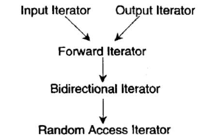
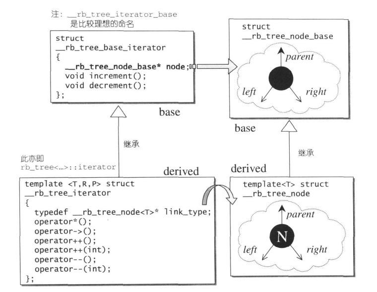
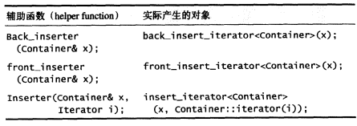
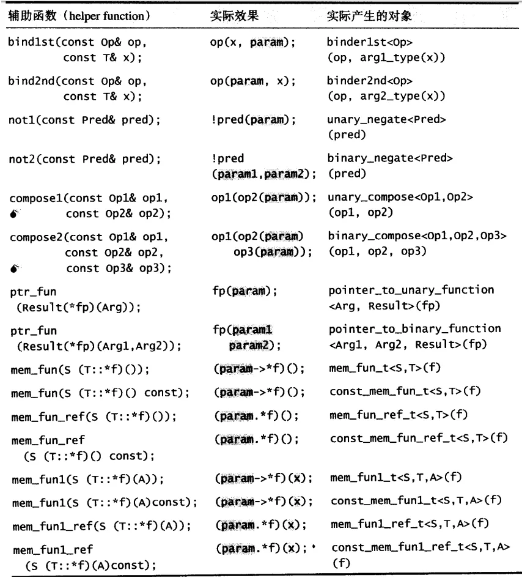

《STL源码剖析》读书笔记
第一章 - STL概论与版本简介
- STL标准模板库提供六大组件：容器（containers）、算法（algorithms）、迭代器（iterators）、仿函数（functors）、配接器（adapters）、配置器（allocators）。它们间的交互关系为：容器通过配置器取得数据储存空间，算法通过迭代器存取容器内容，仿函数可以协助算法完成不同的策略变化，配接器可以修饰或套接仿函数。
第二章 - 空间配置器
空间配置器是隐藏在所有容器背后负责配置空间的组件。
在使用容器时，我们通常不需要自己制定配置器，因为 STL 的每一个容器都已经指定了缺省空间配置器。
我们常用的 new operator 和 delete operator 都包含两个过程：
- 调用 operator new/operator delete 配置/释放内存空间
- 调用对象的构造函数/析构函数。
为了精密分工，STL 配置器将这两个过程区分开来：内存的配置与释放由
alloc::allocate()和alloc::deallocate()负责，对象的构造和析构由::construct()和::destroy()负责。construct()使用运算子 placement new，在指定位置构造对象。1
2
3
4template<class T1, class T2>
inline void construct(T1* p, const T2& value) {
new(p) T1(value); //placement new
}destroy()有两个版本。第一个版本接受一个指针，调用单个对象的析构函数；第二个版本接受两个迭代器，意在批量析构一连串对象。但如果两迭代器指代的范围较大，一次次地调用无意义的构造函数将严重影响效率。所以第二版本使用 traits 技法（第三章）判断元素的数值型别，来决定如何操作。若该型别有 non-trivial destructor，则循环调用所有 destructor，反之则什么也不做。另外，第二版本还针对 char、wchar_t 型迭代器提供了特化版本。1
2
3
4
5
6
7
8
9
10
11
12
13
14
15//第一版本
template class<T>
inline void destroy(T* pointer) {
pointer->~T(); //调用析构函数
}
//第二版本
template<class ForwardIterator>
inline void destroy(ForwardIterator first, ForwardIterator last) {
__destroy(first, last, value_type(first)); //获得first对应数值型别
}
//特化版
inline void destroy(char*, char*) {}
inline void destroy(wchar_t*, wchar_t*) {}SGI STL 对空间配置与释放的设计理念是：
- 向 system heap 要求空间
- 考虑多线程状态（本书不讨论）
- 考虑内存不足时的应变措施
- 考虑过多“小型区块”可能造成的“内存碎片”问题
小型区块不仅会带来内存碎片（fragment）问题，还会带来管理内存需要额外负担（overhead）的问题。为了应对小型区块带来的问题，SGI STL 设计了双层级配置器：
- 第一级配置器直接使用
malloc()和free()，并在系统内存空间无法满足需求时，调用一个客端指定的函数（“内存不足处理例程”）进行处理。 - 第二级配置器则视情况采取不同策略。如果需要的区块较大，超过 128bytes，就移交第一级配置器处理；如果需要的区块较小，就使用内存池（memory pool）管理，称为次层配置（sub-allocation）。
内存池是指在真正使用内存之前先分配一大块内存来形成一个“池”，留作备用。当有新的内存需求时，就从内存池中分出一部分内存块；若内存块不够，则再继续申请新的内存。这样做能够显著提升内存分配的效率。
- 次层配置方法：第二级配置器基于内存池维护16个自由链表（free-lists），各自管理大小分别为 8，16，24，…，128bytes 的小额区块。当客端释还小额区块时，就由配置器回收至对应链表中；当有小额区块的需求时，配置器主动将需求量上调至8的倍数，并从对应链表中调取一块区块。但为了管理维护链表，每个节点需要一块指针域。为了避免这样的内存浪费，STL利用了 C++ 作为非强类型语言而特有的常用技巧 union 。让每个节点一物二用：既可以是指向下一节点的指针，又可以是指向实际区块的指针。当有小额需求时，若自由链表中已经没有区块可用，它将从内存池中获取空间以增加节点。此时若内存池空间足够，则新增 20 个节点；若内存池空间不足但还能提供若干个节点，则新增相应数量节点。若内存池剩余空间已不足供给一个节点，则内存池会利用
1
2
3
4
5//自由链表节点结构
union obj {
union obj* free_list_link; //未被分配时作指向下一节点的指针
char client_data[1]; //被分配后作指向实际区块的指针
}malloc()从堆空间（heap）中配置需求量两倍的内存，再附加一块随配置次数增加的附加内存。若 system heap 空间也不够了，则会先在有更大区块的自由链表中寻找，未找到再调用第一级配置器，利用 out-of-memory 处理机制，看是否有机会释放其他的内存拿来此处使用。最后如果还是失败，则抛出异常。
- 第一级配置器直接使用
除
construct()和destroy()外，还有三个内存基本处理函数：uninitialized_copy()、uninitialized_fill()、uninitialized_fill_n()。- 它们分别对应 STL 算法中的
copy()/fill()/fill_n()（第六章）。 - 它们可以在实现容器区间构造时被使用，将内存的配置与对象的构造行为分离开来。
- 它们都具备“commit or rollback”语义，即要么构造出所有必要元素，要么不构造任何东西——若任何一个构造抛出异常，它们必须析构所有已产生的元素。
- 在实现时，它们先使用 traits 技法（第三章）判断元素的数值型别是否为 POD（Plain Old Data）型别，也就是标量型别（scalar type）或传统的 C 结构体型别。POD 型别必定拥有 trivial constructor/destructor/copy/assignment 函数，因此可以对 POD 型别采用最有效率的初值填写手法，而对 non-POD 型别采取最保险安全的做法。
- 它们分别对应 STL 算法中的
第三章 - 迭代器概念与 Traits 编程技法
STL 的中心思想在于，将容器与算法分离，彼此独立设计，最后再以一帖胶着剂将它们撮合在一起。而迭代器就扮演着这一胶着剂角色。《Dessign Patterns》一书对于 iterator 模式的定义如下：
提供一种方法，使之能够依序巡访某个聚合物（容器）所含的各个元素，而又无需暴露该聚合物的内部表述方式。
迭代器是一种行为类似指针的对象，其最常见的行为就是内容提领和成员访问。所以设计迭代器时最重要的工作就是重载
operator*和operator->。在算法中运用迭代器时，很可能会需要知道与迭代器相关的对象类型，即相应型别（associate type） ，例如迭代器所指之物的类型 value_type 。但 C++ 不是强类型语言，无法直接地获得一个对象的类型。所以我们需要利用 template 的参数推导机制以及内嵌类型声明的技巧，“萃取”出相应型别。这就是 traits 编程技法。
1
2
3
4
5
6
7
8
9
10
11
12
13
14
15
16
17
18
19
20
21
22
23
24//参数推导机制举例
template<class I>
inline void func(I iter) {
func_impl(iter, *iter); //将func的工作移往func_impl
}
template<class I, class T>
void func_impl(I iter, T t) {
T tmp; //成功推导出T，即迭代器所指之物的类型
//...此处为func()原本应做的工作
}
//参数推导机制只能推导参数类型，而不能推导函数返回值类型
//然而声明内嵌类型可以解决这个问题
//内嵌类型声明举例
template<class T>
struct MyIter {
typedef T value_type; //内嵌类型声明
T* ptr;
MyIter(T* p = 0): ptr(p) {}
T& operator*() const { return *ptr; }
}
template<class I>
typename I::type_value func(I ite) { return *ite; }
//typename I::type_value即为I所指之物类型，可作为返回值类型然而这两个技巧还无法完美解决问题。首先，STL 以及整个泛型思维都必须接受原生指针作为一种迭代器，而原生指针无法定义内嵌类型。其次，对于指向常数对象的指针 pointer-to-const，我们期望得到的 value_type 是 non-const 型别而不是 const 型别。为了解决这两个问题，我们还需要针对普通原生指针和指向常数的指针为泛化的 traits 方法提供偏特化版本。要想进行偏特化，首先需要将“萃取”过程交给一个 class template 来专门完成。
1
2
3
4
5
6//专用于“萃取”迭代器特性的class
template<class I>
struct iterator_traits {
typedef typename I::value_type value_type;
}
//如果I定义了自己的value_type，就可以被其“萃取”出来这样做让过程多了一层间接性，也使得偏特化可以在 iterator_traits 上进行。
1
2
3
4
5
6
7
8
9
10
11//针对原生指针的偏特化
template<class T>
struct iterator_traits<T*> {
typedef T value_type;
}
//针对pointer-to-const的偏特化
template<class T>
struct iterator_traits<const T*> {
typedef T type_value; //T为non-const型别
}迭代器的五大相应型别为：value_type、difference_type、pointer_type、reference_type、iterator_category。为了符合规范，任何迭代器都应提供五个内嵌相应型别，否则可能无法与 STL 其他组件顺利搭配。
iterator_catagory：根据移动特性与施行操作，迭代器被分为五类。
- Input Iterator：所指对象不允许改变，只读
- Output Iterator：所指对象不允许改变，唯写
- Forward Iterator：可进行读写操作和单向迭代
- Bidirectional Iterator：可双向移动
- Random Access Iterator：涵盖所有指针算术能力
设计适当的相应型别是迭代器的责任，而设计适当的迭代器则是容器的责任。因为只有容器本身才知道应该设计出怎样的迭代器来遍历自己，并执行迭代器该有的各种行为。这也解释了为什么每一种 STL 容器都有自己的专属迭代器。至于算法，完全可以独立于容器和迭代器之外自行发展。
第四章 - 序列式容器
序列式容器包含 C++ 语言本身提供的 array 和 STL 另外提供的 vector、list、deque、stack、queue、priority_queue。其中 stack 和 queue 由于只是将 deque 改造而成，技术上被归类为一种配接器。
vector：
- vector 与 array 的唯一差别在于对空间运用的灵活性，所以 vector 实现的关键在于空间扩充。
- vector 维护的数据结构是一个连续线性空间，直接使用普通指针作为迭代器，支持随机存取。所以 vector 提供的迭代器类型是 Random Access Iterators 。
- vector 在每次空间不足时会重新配置一块大小为原空间两倍的空间并将所有数据转移到新空间内。这样可以保证插入 $n$ 个元素的总时间复杂度为 $O(n)$。需要注意，引起空间重新配置时，原来的所有迭代器都会失效。
- vector 在
pop_back()以及clear()等操作时会使用destroy()以调用元素对象的析构函数，但不会释放空间。 - vector 的其他操作实现原理等同于对线性数组的操作。
list：
- list 是一个双向链表，其内部维护一个带尾空白节点的双向循环链表，符合 STL 的“前闭后开”要求。
- list 的迭代器需要前移、后移，属于 Bidirectional Iterators ，因此不能直接使用普通指针。无论如何进行插入和接合操作，list 的迭代器都不会失效。
- list 有一个 list_node_allocator ，专门用以更方便地一次性配置一个节点的空间。
- list 的
insert()操作会将新节点插入目标节点的前方，这符合 STL 的插入操作标准规范。 - list的
splice()操作可以 $O(1)$ 地进行区间接合。 - list 不适用 STL 的
sort()，但有自己的sort()成员函数，采用算法为快速排序。
deque：
- deque 是一个拥有双向开口的连续线性空间。deque 不具有“容量”概念，因为它内部动态地以分段连续空间（称为缓冲区，可以指定大小，默认为 512b）组合而成，随时可以增加并链接一段新空间。
- deque 采用一段连续空间作为主控（中控器），称为 map（与 STL 的 map 容器无关）。
- map 中每个元素都是指向一段连续线性空间的指针。
- map 中的元素从最中央开始向两边扩展，以便同时处理在 deque 两边插入元素的情况。
- map 在空间不足时的扩充手段与 vector 类似。
- deque 的迭代器属于 Random Access Iterator，但为了在多段连续空间上维护整体连续的假象，不能使用普通指针。deque 的迭代器保存的信息有：当前元素指针、当前缓冲区头指针、当前缓冲区尾指针、当前缓冲区对应中控器中节点的指针。这些信息配合 deque 中的 start 和 finish 迭代器，即可实现 $O(1)$ 随机访存。
- deque 自行定义了两个专属空间配置器：data_allocator、map_allocator。
- deque 在移除元素时，若缓冲区已空，将会释放缓冲区（除非只剩最后一个缓冲区）。
- deque在进行
insert()和erase()操作时，将会根据插入位置前后元素数量判断数据移动策略。
stack：
- stack 不属于容器，而属于配接器，因为它是通过修改底部容器的接口实现的。
- stack 默认以 deque 作为底部结构，封闭其头端开口，只允许存取顶部元素，且不允许遍历，因此也没有迭代器。
- 除 deque 外，stack 也可以以 list 为底部容器。
1
2//定义以list为底部容器的stack
stack<int, list<int>> stk;
queue：
- queue 同样也是一种配接器，性质与 stack 几乎一致，唯一差别在于 queue 双向开口。
heap/priority_queue：
- heap 不属于 STL 容器组件，但它负责作为 priority_queue 的底层机制。heap 以 vector 为底层容器，性质和相应算法与数据结构中的 heap 一致，此处略。heap 默认为大根堆。
第五章 - 关联式容器
STL 标准中的关联式容器包含 set、multiset、map、multimap，它们都是由红黑树 RB-tree 实现的。
笔记作者补充：C++11 还提供了基于散列表 hashtable 的 unordered_map 和 unordered_set 。
RB-tree：
- RB-tree也是 STL 中的独立容器，原理与数据结构中的 RB-tree 相同，但并不开放外界使用。
- RB-tree 定义了专属空间配置器，可以一次性配置一个节点的空间。
- RB-tree 的节点包含实值 value 和键值 key，其中 key 是节点间进行比较的依据。
- 为了简化边界情况的处理，SGI STL 特别为根节点再设计了一个父节点，称为 header，其左子节点指向最左节点，右子节点指向最右节点。
- RB-tree 的迭代器属于 Bidirectional Iterators。为了更大的弹性，RB-tree 的迭代器实现与 RB-tree 的节点实现分为对应的两层。
- RB-tree 的插入有
insert_equal()（可重复，插入相同值的最右方）和insert_unique()（不可重复，若已有则不插入）两种。
set：
- set 中元素的 value 和 key 是等同的，不像 map 那样可以同时拥有 value 和 key。set 不允许两个元素拥有相同的 key 。我们不可通过 set 的迭代器改变元素的值，因为改变元素值的同时也改变了 key ，会破坏 set 内部的组织和有序性。也因此，set 的迭代器为 constant iterator。
- STL 为 set/multiset 提供了一些集合算法：
set_intersection()、set_union()、set_difference()、set_symmetric_difference()（第六章）。
map：
- map 的所有元素都是 pair，pair 中的第一元素为 key，第二元素为 value。map 不允许两个元素拥有相同的 key。我们可以修改 map 元素的 value，但不可以修改其 key。
multiset/multimap：
- multiset/multimap 与 set/map 几乎相同，唯一区别在于插入时调用的是
insert_equal()，即允许多个元素拥有相同的 key。
- multiset/multimap 与 set/map 几乎相同，唯一区别在于插入时调用的是
hashtable：
- SGI STL 的 hashtable 采用开链法处理哈希冲突。它维护一个基于 vector 的表，表中元素称为桶节点（bucket）。每个桶节点并不采用 STL list，而是自行维护一个由 hashtable node 组成的单向链表。
- hashtable 以质数作为表格大小，它提前将 28 个逐渐呈现约两倍关系的质数准备好，以备随时取用作为新表格大小。
- hashtable 的迭代器属于 Forward Iterator，可沿 bucket vector 及其中链表向下遍历，但无法后退。
- 有些数据类型元素无法直接输入哈希函数，如字符串等，因此所有元素都需要统一先输入一个函数
bkt_num()，由它进行转换并调用哈希函数。除整型、C 字符串类型外，其他数据类型都需要用户自定义哈希函数。
第六章 - 算法
STL 算法分为质变算法（mutating algorithms）（需要对目标区间进行改变）和非质变算法（nonmutating algorithms）（不需要对目标区间进行改变）。其中部分质变算法会提供两个版本：in-place（就地改变）版和 copy（生成并返回副本）版。
STL 提供的算法几乎都是施行于一段连续元素空间的算法，接收的前两个参数通常是一对迭代器，用以标示算法的操作区间。STL 通常采用前闭后开区间表示法。每个 STL 算法的声明都表现出它所需要的最低程度的迭代器类型，若传入无效的迭代器，无法在编译时期被发现，且可能导致不可预知的结果。
STL 的算法都经过泛型化，只要传入的迭代器能够进行算法所需的操作，例如前进、后退、提领等，算法就能在任何数据类型和数据结构上完成。
部分算法概览
<numeric>accumulate()：计算所有元素与初始值进行二元运算的结果（默认为求和）adjacent_difference()：构造差分序列partial_sum()：构造前缀和序列inner_product()：计算两向量内积
<algorithm>equal()：判断两序列相等fill()/fill_n()：将序列中所有元素/前 n 个元素改填新值iter_swap()：将两迭代器所指元素对调lexicographical_compare()：字典序比较两序列max()/min()：最大值/最小值mismatch()：求两序列第一个失配点swap()：交换两对象内容copy()/copy_backward()：顺序/倒序复制序列set_union()/set_intersection()/set_difference()/set_symmetric_difference()：集合并/交/差/对称差make_heap()/push_heap()/pop_heap()/sort_heap()：堆实现算法adjacent_find()：找出第一组满足指定条件的相邻元素（默认为相等）count()/count_if()：计算等于指定值/满足指定条件的元素个数find()/find_if()：找出第一个等于指定值/满足指定条件的元素for_each()：将仿函数施行于序列上每一元素generate()/generate_n()将仿函数结果填写在序列所有元素/前 n 个元素上max_element()/min_element()：找最大值/最小值位置merge()：合并有序序列到新序列replace()/replace_copy()：将旧值以新值取代/在新序列上操作replace_if()/replace_copy_if()：取代满足条件的元素/在新序列上操作reverse()/reverse_copy()：将序列倒序/在新序列上操作rotate()/rotate_copy()：交换 $[\text{begin},\text{middle})$ 和 $[\text{middle},\text{last})$ /在新序列上操作search()/search_n()：找出子序列/子序列前 n 个元素的首匹配点swap_ranges()：交换等长区间transform()：将仿函数施行于序列并由结果产生一个新序列unique()/unique_copy()：移除重复元素并返回尾指针/在新序列上操作lower_bound()/upper_bound()：在有序区间上二分查找第一个大于等于/大于指定值的元素binary_search()：在有序区间上二分查找指定值next_permutation()/prev_permutation()：将序列变为字典序升序下的下一个/上一个排列，返回是否操作成功random_shuffle()：将序列随机打乱partial_sort()：利用堆排序将最小的若干元素置于序列首端并排序，时间复杂度 $O(nlogm)$sort()：排序。数据量大时采用快速排序，分段后对较小段采用插入排序，递归层次过深时采用堆排序。equal_range()：在有序区间上二分查找等于指定值的元素区间inplace_merge()：原地合并两段连续的有序序列nth_element()：使第 k 大元素在位置 k，且其前方元素都比其小，后方元素都比其大。使用算法类似快速排序的划分区间，但只划分 nth 所在区间，时间复杂度平均 $O(n)$，最坏 $O(n^2)$merge_sort()：归并排序
第七章 - 仿函数
仿函数也叫函数对象，是一种行为类似函数的对象，其类的定义中必须自定义
operator()。仿函数存在的意义：函数指针不能满足 STL 对抽象性的要求，也无法和 STL 其他组件如配接器搭配以产生更灵活的变化。仿函数的主要用途是搭配 STL 算法。
使用 STL 内置的仿函数需要包含
<functional>类似于迭代器，仿函数必须定义自己的相应型别才能获得可配接性，从而更好地融入 STL 体系。仿函数的相应型别主要用来表现函数参数类型和返回值类型。方便起见，STL 定义了两个类 unary_function、binary_function，分别代表一元仿函数和二元仿函数。
1
2
3
4
5
6
7
8
9
10
11
12
13
14//一元仿函数
template<class Arg, class Result>
struct unary_function {
typedef Arg argument_type;
typedef Result result_type;
}
//二元仿函数
template<class Arg1, class Arg2, class Result>
struct binary_function {
typedef Arg1 first_argument_type;
typedef Arg2 second_argument_type;
typedef Result result_type;
}STL 规定，所有仿函数必须继承其中一种类型，以获得其相应型别信息。
算术类仿函数：加法
plus<T>、减法minus<T>、乘法multiplies<T>、除法divides<T>、模modulus<T>、否定negate<T>关系运算类仿函数：等于
equal_to<T>、不等于not_equal_to<T>、大于greater<T>、大于等于greater_equal<T>、小于less<T>、小于等于less_equal<T>逻辑运算类仿函数：逻辑与
logical_and<T>、逻辑或logical_or<T>、逻辑非logical_not<T>其他仿函数：证同（返回自身）
identity<T>、选择（返回 pair 的第一元素或第二元素）select1st<Pair>/select2nd<Pair>、投射（返回第一参数或第二参数）project1st<Arg1, Arg2>/project2nd<Arg1, Arg2>
第八章 - 配接器
配接器的概念实际上是一种设计模式。《Design Patterns》一书对 adapter 样式的定义如下：
将一个 class 的接口转换为另一个 class 的接口，使原本因接口不兼容而不能合作的 classes 可以一起运作。
STL 提供的配接器中，改变仿函数接口的称为 function adapter，改变容器接口的称为 container adapter，改变迭代器接口的称为 iterator adapter。
容器配接器：queue、stack（第四章）。
迭代器配接器：分为 insert iterators、reverse iterators、iostream iterators，他们的接口在
<iterator>中。- insert iterators 将一般迭代器的赋值操作转变为插入操作。包括负责尾端插入的 back_insert_iterator、负责首端插入的 front_insert_iterator、可进行任意位置插入的 insert_iterator。当客户端对 insert iterator 进行赋值操作时，insert iterator 会将其转为插入操作；并且，其他迭代器的惯常行为在 insert iterator 中都被关闭。
- reverse iterators 将一般迭代器的行进方向逆转，使
operator++变成后退，operator--变成前进。任何 STL 容器都提供有rbegin()和rend()这两个操作，它们返回反向遍历容器的迭代器，其中rbegin()指向尾元素，而rend()指向首元素的前驱元素。 - iostream iterators 可绑定到某个数据流（stream）对象身上，分为拥有输入功能的 istream_iterator 和拥有输出功能的 ostream_iterator。所谓绑定一个 istream object，其实就是在 istream iterator 内部维护一个 istream member，客户端对这个迭代器所做的
operator++操作会被导引调用迭代器内部所含的 istream member 的输入操作operator>>。ostream_iterator 同理。
仿函数配接器：仿函数配接器是所有配接器中数量最庞大的，也是灵活性最强的，可以多次叠加配接。这些配接操作包括：绑定（bind）、否定（negate）、组合（compose）。仿函数的价值在于，通过他们之间的绑定组合，几乎可以无限制地创造出各种表达式，以搭配 STL 算法发挥作用。
一般函数经过
ptr_fun()处理、成员函数经过mem_fun()处理，也都可以获得可配接性。所有迭代器配接器和仿函数配接器都配有更直观好用的辅助函数，实际运用时通常不直接使用配接器对象而使用辅助函数接口。

《STL源码剖析》读书笔记